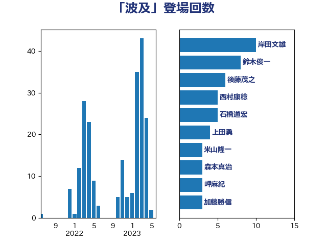

単語「波及」

| 岸田文雄 | 自由民主党 | 10 回 |
| 鈴木俊一 | 自由民主党 | 8 回 |
| 後藤茂之 | 自由民主党 | 6 回 |
| 西村康稔 | 自由民主党 | 5 回 |
| 石橋通宏 | 立憲民主党 | 5 回 |
| 上田勇 | 公明党 | 4 回 |
| 米山隆一 | 立憲民主党 | 3 回 |
| 森本真治 | 立憲民主党 | 3 回 |
| 岬麻紀 | 日本維新の会 | 3 回 |
| 加藤勝信 | 自由民主党 | 3 回 |
| 西銘恒三郎 | 自由民主党 | 2 回 |
| 西岡秀子 | 国民民主党 | 2 回 |
| 藤田文武 | 日本維新の会 | 2 回 |
| 笠井亮 | 日本共産党 | 2 回 |
| 田村貴昭 | 日本共産党 | 2 回 |
| 田村まみ | 国民民主党 | 2 回 |
| 河西宏一 | 公明党 | 2 回 |
| 沢田良 | 日本維新の会 | 2 回 |
| 松本剛明 | 自由民主党 | 2 回 |
| 村田享子 | 立憲民主党 | 2 回 |
| 新垣邦男 | 立憲民主党 | 2 回 |
| 斉藤鉄夫 | 公明党 | 2 回 |
| 山口那津男 | 公明党 | 2 回 |
| 守島正 | 日本維新の会 | 2 回 |
| 吉田はるみ | 立憲民主党 | 2 回 |
| 加藤竜祥 | 自由民主党 | 2 回 |
| 一谷勇一郎 | 日本維新の会 | 2 回 |
| 高橋光男 | 公明党 | 1 回 |
| 馬場雄基 | 立憲民主党 | 1 回 |
| 青柳陽一郎 | 立憲民主党 | 1 回 |
| 階猛 | 立憲民主党 | 1 回 |
| 阿部知子 | 立憲民主党 | 1 回 |
| 鎌田さゆり | 立憲民主党 | 1 回 |
| 金子恭之 | 自由民主党 | 1 回 |
| 里見隆治 | 公明党 | 1 回 |
| 赤木正幸 | 日本維新の会 | 1 回 |
| 藤木眞也 | 自由民主党 | 1 回 |
| 藤岡隆雄 | 立憲民主党 | 1 回 |
| 萩生田光一 | 自由民主党 | 1 回 |
| 羽生田俊 | 自由民主党 | 1 回 |
| 篠原豪 | 立憲民主党 | 1 回 |
| 石井章 | 日本維新の会 | 1 回 |
| 田村智子 | 日本共産党 | 1 回 |
| 田島麻衣子 | 立憲民主党 | 1 回 |
| 田中健 | 国民民主党 | 1 回 |
| 生稲晃子 | 自由民主党 | 1 回 |
| 玉木雄一郎 | 国民民主党 | 1 回 |
| 片山大介 | 日本維新の会 | 1 回 |
| 熊谷裕人 | 立憲民主党 | 1 回 |
| 滝沢求 | 自由民主党 | 1 回 |
| 湯原俊二 | 立憲民主党 | 1 回 |
| 浜地雅一 | 公明党 | 1 回 |
| 浜口誠 | 国民民主党 | 1 回 |
| 浅田均 | 日本維新の会 | 1 回 |
| 泉田裕彦 | 自由民主党 | 1 回 |
| 水野素子 | 立憲民主党 | 1 回 |
| 橘慶一郎 | 自由民主党 | 1 回 |
| 横山信一 | 公明党 | 1 回 |
| 梅谷守 | 立憲民主党 | 1 回 |
| 林芳正 | 自由民主党 | 1 回 |
| 松村祥史 | 自由民主党 | 1 回 |
| 川合孝典 | 国民民主党 | 1 回 |
| 岸真紀子 | 立憲民主党 | 1 回 |
| 岡本あき子 | 立憲民主党 | 1 回 |
| 山際大志郎 | 自由民主党 | 1 回 |
| 山田太郎 | 自由民主党 | 1 回 |
| 小渕優子 | 自由民主党 | 1 回 |
| 小沼巧 | 立憲民主党 | 1 回 |
| 小池晃 | 日本共産党 | 1 回 |
| 小川淳也 | 立憲民主党 | 1 回 |
| 宮本徹 | 日本共産党 | 1 回 |
| 太田房江 | 自由民主党 | 1 回 |
| 大島敦 | 立憲民主党 | 1 回 |
| 塩川鉄也 | 日本共産党 | 1 回 |
| 倉林明子 | 日本共産党 | 1 回 |
| 佐藤英道 | 公明党 | 1 回 |
| 佐藤啓 | 自由民主党 | 1 回 |
| 住吉寛紀 | 日本維新の会 | 1 回 |
| 伊藤渉 | 公明党 | 1 回 |
| 伊波洋一 | 無所属 | 1 回 |
| 伊佐進一 | 公明党 | 1 回 |
| 今井絵理子 | 自由民主党 | 1 回 |
| 中谷真一 | 自由民主党 | 1 回 |
| 中川郁子 | 自由民主党 | 1 回 |
| 中川正春 | 立憲民主党 | 1 回 |
| 中島克仁 | 立憲民主党 | 1 回 |
| 下野六太 | 公明党 | 1 回 |
| 三浦信祐 | 公明党 | 1 回 |
| ながえ孝子 | 無所属 | 1 回 |
| たがや亮 | れいわ新選組 | 1 回 |